ESXi Virtual Network Configuration
In this section the virtual network will be created to provide the foundation to connect the various components of ISEAGE. It is important that you name the virtual switches exactly as shown in the directions. That way when you add the pre-built virtual machines later, the network connections will be automatically made.
Note: Your server needs at least 5 physical network connections to work with these directions!
Modify vSwitch0
- In the vSphere client, go to the Configuration tab.
- Click on the Networking link in the Hardware box on the left. The initial configuration will look similar to Figure 2 .
- Click on the Properties... link next to vSwitch0
- Make sure that the vSwitch is highlighted and then click the Edit... button.
- Go to the Security tab and change Promiscuous Mode to Accept and then click OK.
- Next, highlight the second item in the list on the left (the name of the vSwitch) and then click the Edit... button.
- Change the name of the vSwitch to be "External Network", click OK , and then click the Close button on the vSwitch properties window.
- Now, click on Add Networking... to create a new vSwitch.
- Click next to create a Virtual Machine type switch.
- Make sure all of the physical network connection (vmnicX) boxes are unchecked for this switch to create a purely virtual switch and then click next.
- Name the switch "Air Gap", click Next , and then click Finish on the next screen.
- Your virtual network layout should now look similar to Figure 11
- Repeat steps 9 through 11 to create all of the switches shown in Table 1 to create the Virtual Network for ISEAGE. Do not worry about the promiscuous column for now. We will take care of this in the next step.
- Now we will go back trough the switches we just created and enable promiscuous mode.
- Click on the Properties... link next to vSwitch0
- Make sure that the vSwitch is highlighted and then click the Edit... button.
- Go to the Security tab and change Promiscuous Mode to Accept and then click OK.
- Repeat steps 15 through 17 for the rest of the switches (except vSwitch1 - Air Gap) to enable promiscuous mode on the rest of the switches.
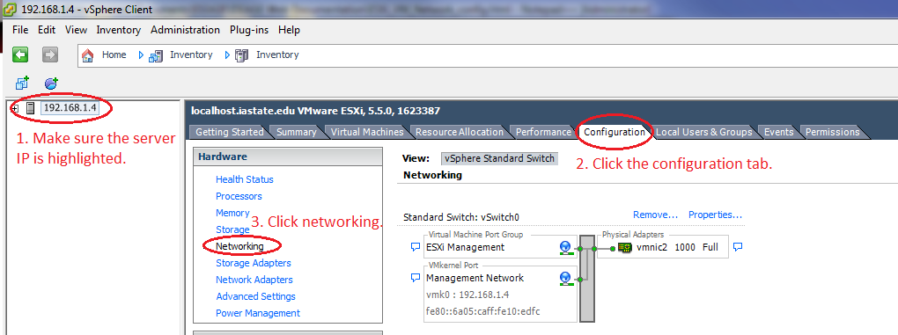
Figure 1: Network Configuration Section
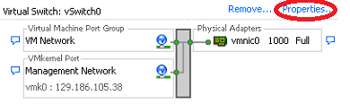
Figure 2: Initial Network Configuration
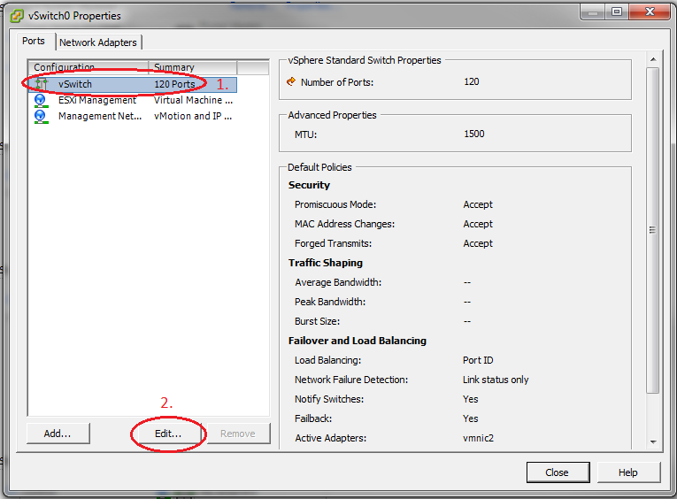
Figure 3: Switch Settings
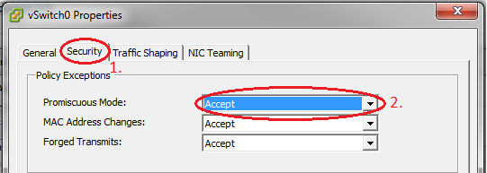
Figure 4: Promiscuous Mode
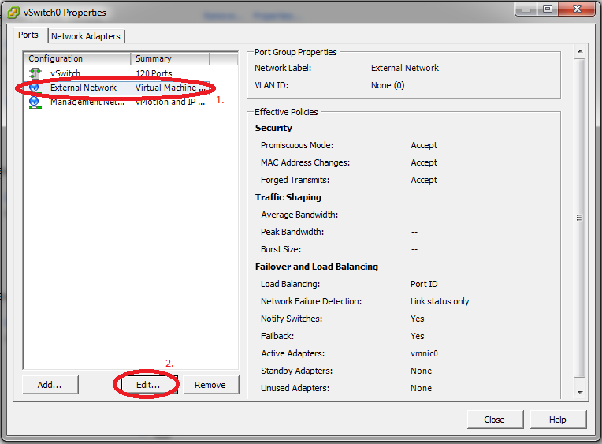
Figure 5: Edit vSwitch Name
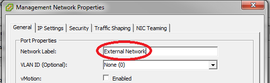
Figure 6: Change vSwitch Name
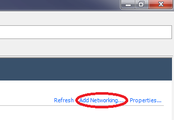
Figure 7: Add vSwitch
Add the other vSwitches
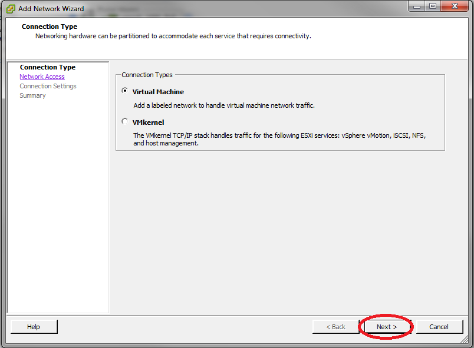
Figure 8: Create a VM Switch
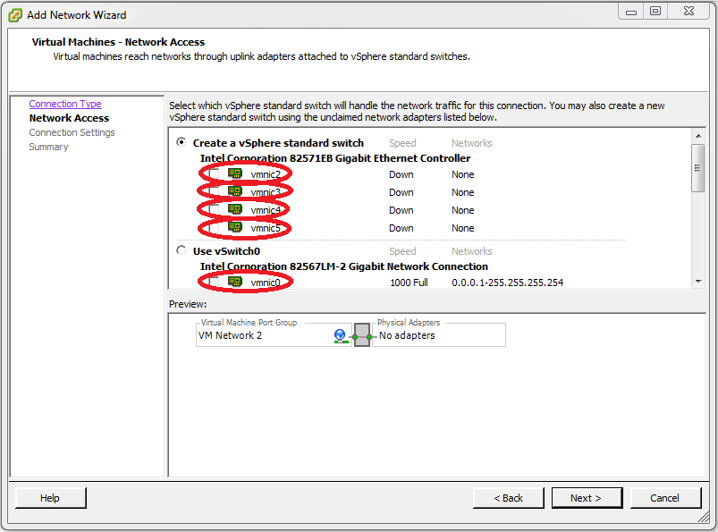
Figure 9: Edit vSwitch Physical Connections
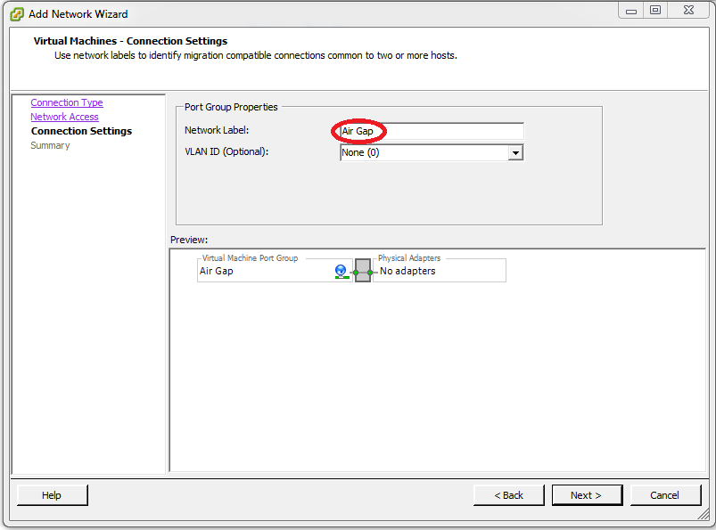
Figure 10: Name the vSwitch Air Gap
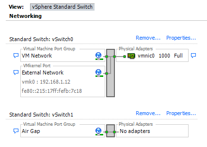
Figure 11: Network layout
| Name | Network Label | Promiscuous | Network Adapter (Vmnic) |
|---|---|---|---|
| vSwitch0 | External Network | Yes | Vmnic0 |
| vSwitch1 | Air Gap | No | None |
| vSwitch2 | Backplane | Yes | None |
| vSwitch3 | Control | Yes | None |
| vSwitch4 | Keyhole | Yes | Vmnic1 |
| vSwitch5 | ISEAGE1 | Yes | Vmnic2 |
| vSwitch6 | ISEAGE2 | Yes | Vmnic3 |
| vSwitch7 | TAP | Yes | Vmnic4 |
| vSwitch8 | Ice Bridge | Yes | None |
| vSwitch9 | pfSense WAN | Yes | None |
| vSwitch10 | Private net | Yes | None (optional) |
Figure 12: Initial Network Configuration
Figure 13: Switch Settings
Figure 14: Promiscuous Mode
ESXi Virtual Machine Install
After configuring the virtual network you are ready to download and install the Virtual Machines. Proceed to the Install Virtual Machines for directions on how to download and install the Virtual Machines for ISEAGE.